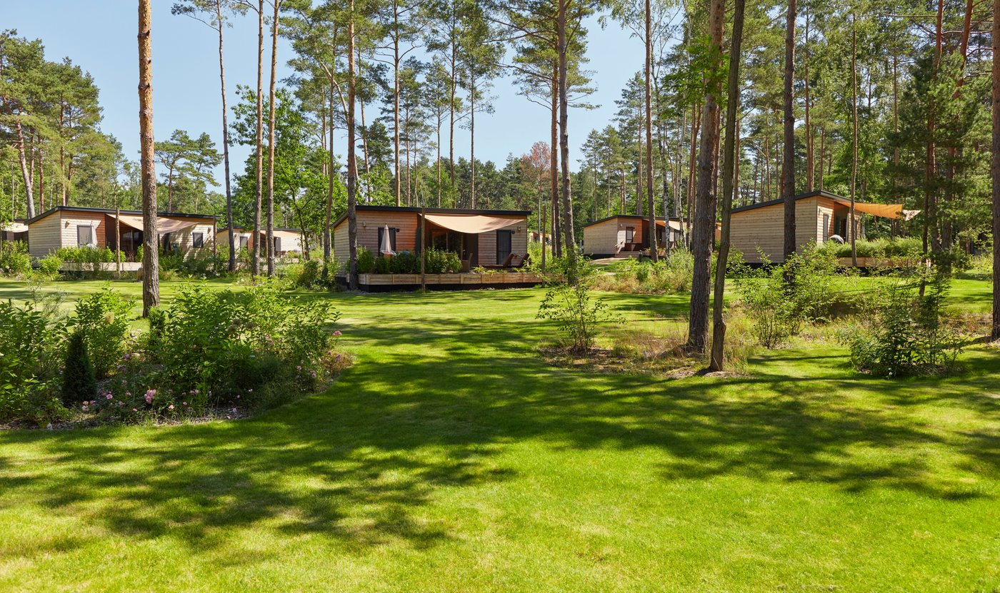

Welcome To Tropical Island Resort! We Offer:
Accomodations
Activities
Travel Arrangements
Pictures
Tropical Islands Resort is a tropical theme park located in the former Brand-Briesen Airfield in Krausnick, in the Halbe municipality in the district of Dahme-Spreewald in Brandenburg, Germany, 50 kilometres from the southern boundary of Berlin.
Address: Tropical-Islands-Allee 1, 15910 Krausnick, Germany
Area: 16 acres
Opened: December 19, 2004
